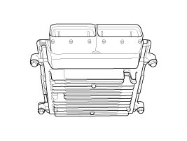

Transaxle Control Module (TCM)
Description
Transaxle Control Module (TCM) is the automatic transaxle's brain. The module receives and processes signals from various sensors and implements a wide range of transaxle controls to ensure optimal driving conditions for the driver. TCM is programmed for optimal response to any on-road situation. In the event of a transaxle failure or malfunction, TCM stores the fault information in memory so that the technician may reference the code and quickly repair the transaxle.
Functions
- Monitors the vehicle's operating conditions to determine the optimal gear setting.
- Performs a gear change if the current gear setting differs from the identified optimal gear setting.
- Determines the need for Damper Clutch (D/C) activation and engages the clutch accordingly.
- Calculates the optimal line pressure level by constantly monitoring the torque level and adjusts the pressure accordingly.
- Diagnoses the automatic transaxle for faults and failures.
